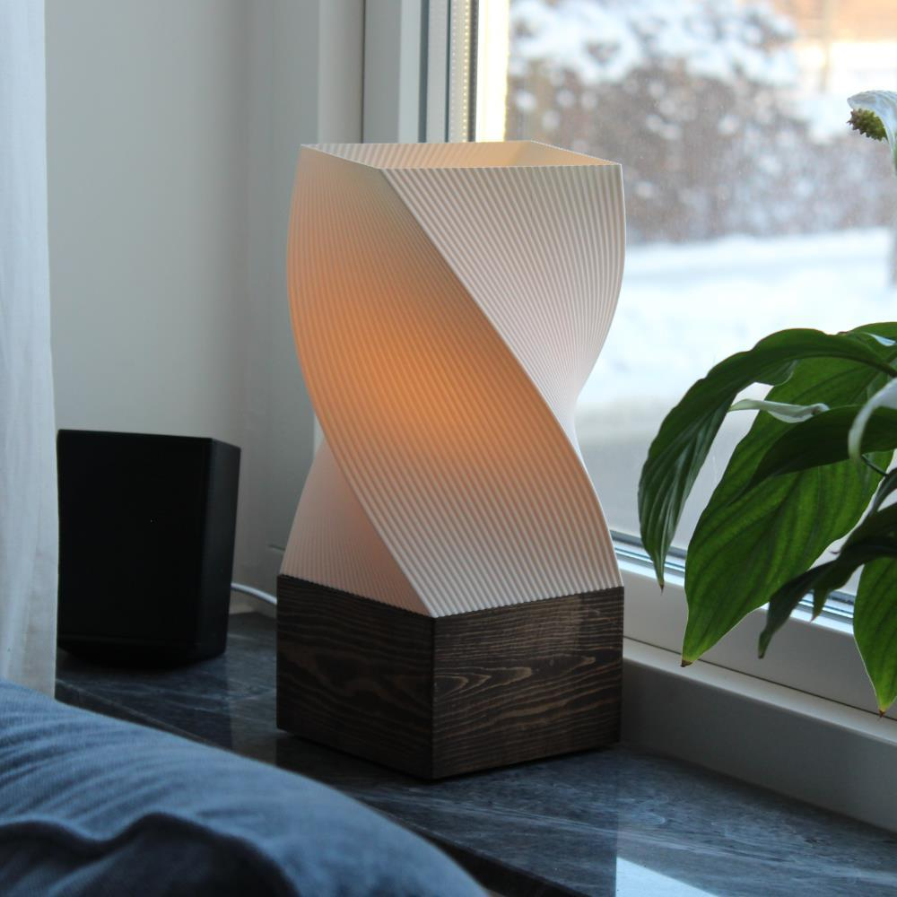
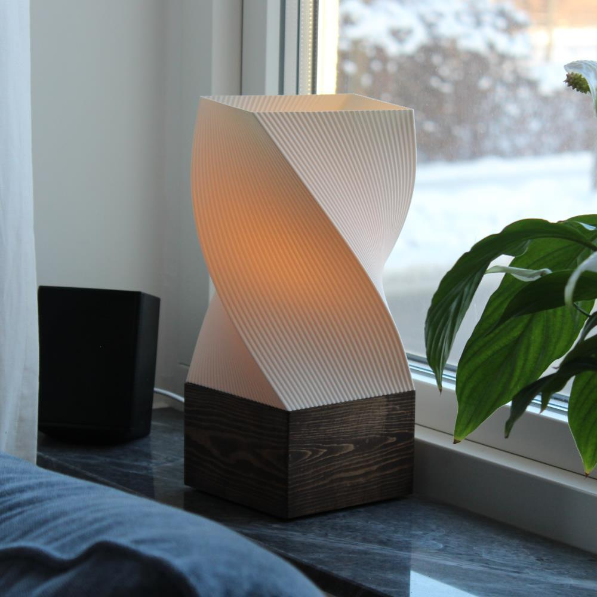

Snurrande lampa
Ville testa göra något lite småfint med trä
Slutade ändå med att jag gjorde en till lampa
 

Hur den gjordes
Jag hade först en idé om en lampa med en botten i betong där skärmen och foten på lampan följde samma form.
För att se om jag gillade formen på skärmen så skrev jag ut en och fick då idén om att göra en fot i trä istället.
Har aldrig gjort något liknande i trä innan och detta kändes som ett bra projekt att lära sig hur man får trä fint.
I och med att jag inte hade gjort något liknande innan så testade jag lite olika sätt att bygga foten på.
Jag gjorde en med bara två långa och två korta sidor, den va ingen personlig favorit.
Gjorde två stycken med "pelare" på sidorna och testa med båda liggade och stående mönster på träet i mitten.
Föredrar nog när allt mönster är stående men den blev inte lika bra så för nu är det den med liggande i mitten som används.
Testade även göra ett litet test med 45 graders vinkel på sidorna för att få bort skarven så mycket som möjligt men hade inte tillräckligt med trä kvar för en hel fot men tror det är den tekniken jag hade använt om jag skulle göra en till
För en gångs skull glömde jag inte bort hur jag skulle få plats med sladd och kontakt!
Har ingen bild på den med det sitter en liten hållare inuti skärmen som sätter fast skärmen med bottnen med skruv
Det är även i den hållaren som en E14 lamphållare sitter
På undersidan är det även ett litet spår för kablen så den sitter platt och fint
Har inte gett upp hoppet om en gjuten fot och har designat formen för det men vi får se om jag testar de någon gång
Tror det hade kunnat bli ganska coolt men blev ändå tillräckligt nöjd med hur denna i trä blev för att inte vilja byta ut den direkt
Gjorde även en annan version senare som jag blev lite mer nöjd med, en annan version av träbasen och lite annan version av skärmen